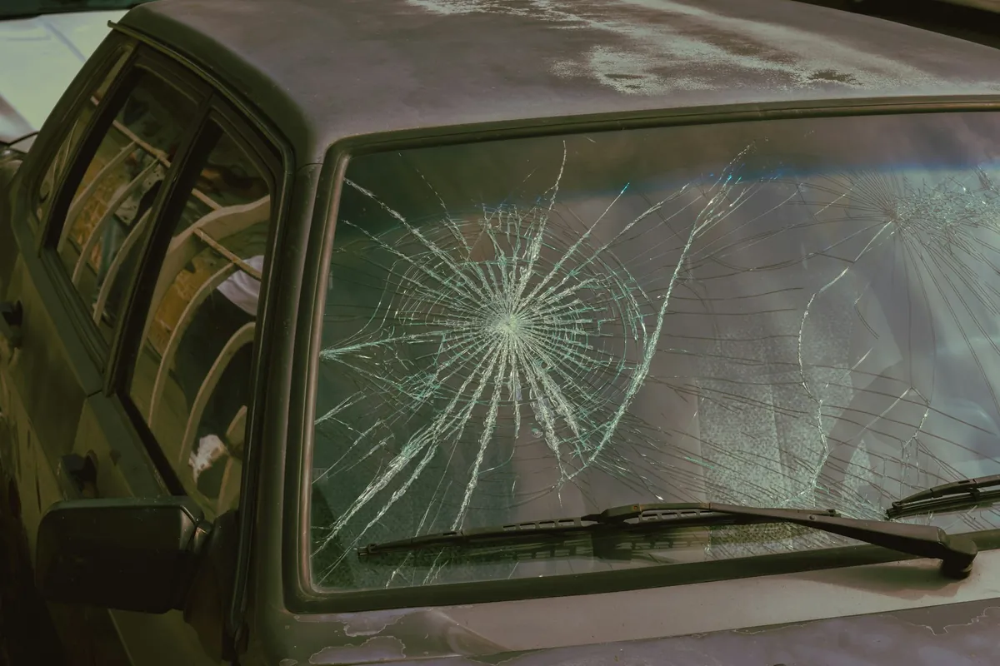
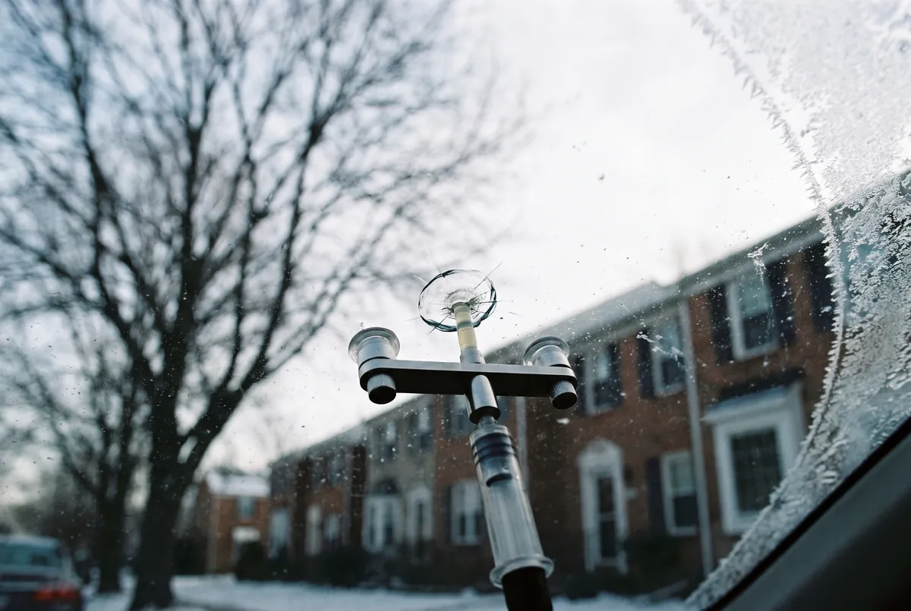
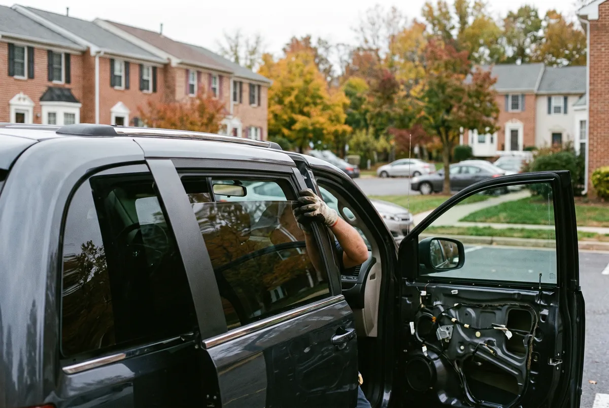

Windshield Replacement in Bowie
Windshield replacement in Bowie is the fix for a crack longer than about six inches, a break at the edge of the glass, or damage right in the driver’s view. It suits anyone whose windshield can no longer be safely repaired.
Left alone, a long crack keeps running with every cold snap and pothole, and a cracked windshield in the driver’s view can fail a Maryland State Inspection when a used car is sold.
Call us today for windshield replacement in Bowie. Read more about windshield replacement.

Windshield Chip Repair in Bowie
Windshield chip repair in Bowie fills a fresh stone chip with clear resin so it stops spreading and becomes much harder to see. It is the right call for chips smaller than a quarter that sit away from the edges.
Ignored, a chip collects dirt and water. The first freezing night or blast of defrost air can turn it into a crack that needs a full windshield.
Call us today for windshield chip repair in Bowie. Read more about windshield chip repair.

Car Window Replacement in Bowie
Car window replacement in Bowie covers door glass, small quarter windows and rear windshields broken by a break-in, an accident or a failed regulator. Side glass is tempered, so it shatters into small pieces that have to be cleaned out of the door and the cabin.
Until it is replaced, a broken window lets in rain and cold and leaves the car easy to get into. Plastic and tape rarely survive a night of wind.
Call us today for car window replacement in Bowie. Read more about car window replacement.

ADAS Camera Calibration in Bowie
ADAS camera calibration in Bowie re-aims the forward camera behind the rearview mirror after a windshield is replaced. Most newer vehicles with lane-keep assist, automatic emergency braking or adaptive cruise control need it.
Skipped, the camera can read the lane a few degrees off. Warning lights may come on, or the safety systems may brake or steer at the wrong moment.
Call us today for adas camera calibration in Bowie. Read more about adas camera calibration.